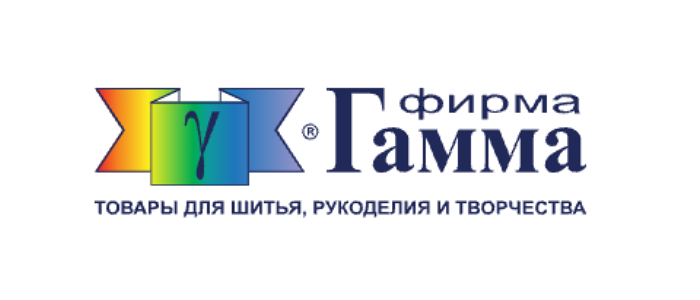
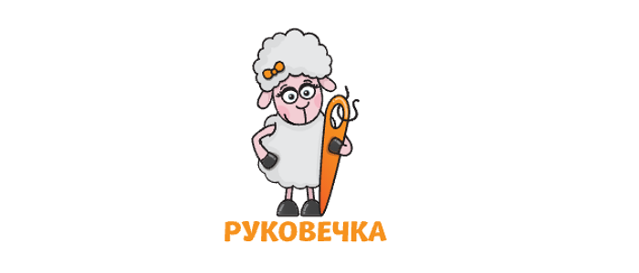
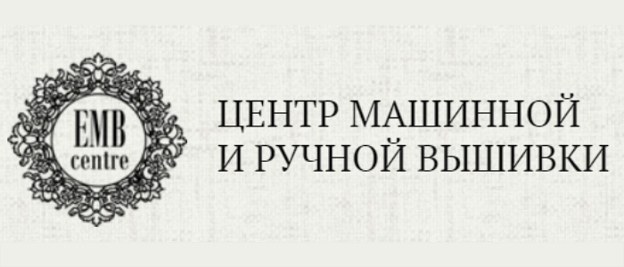
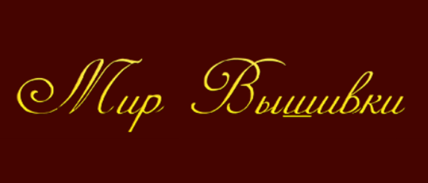
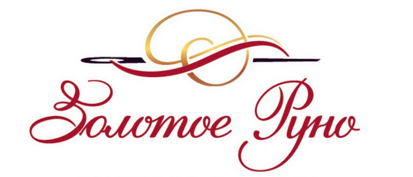

Производственно-торговая фирма «Гамма» — лидер на российском рынке швейной фурнитуры и товаров для рукоделия — основана в 1993 году и за 28 лет работы зарекомендовала себя как надежный партнер и для покупателей, и для поставщиков. Достоинством фирмы является самый широкий ассортимент швейной фурнитуры в СНГ — более 20 тысяч видов товаров, более 90 тысяч наименований. К каждому сезону ассортимент пополняется новыми коллекциями пуговиц и фурнитуры, наборов для рукоделия, модными расцветками тканей, ниток, молний, пряжи.

Хотите подобрать вышивку себе или в подарок? Вы выбрали правильный рукодельный магазин! В ассортименте «Руковечки» Вы найдёте множество интересных наборов для вышивания и полезных приспособлений для рукоделия. Вышивка крестиком, вышивка бисером, алмазная вышивка – это лишь небольшая часть товаров для вышивания в нашем магазине! Решили купить вышивку онлайн – с «Руковечкой» это будет просто, удобно и выгодно!

Центр машинной и ручной вышивки
Ручная вышивка – перспективное направление в современной моде, прекрасная возможность сделать бизнес еще более успешным! В нашем интернет-магазине представлены уникальные товары для ручной вышивки – эксклюзивные материалы, предназначенные для таких редких техник вышивки, как золотое шитье и люневильская вышивка от-кутюр (инструменты, расходные материалы, аксессуары, фурнитура и др.). Рамы для вышивки, а также подставки для них, представленные в каталоге, разработаны под заказ и выполнены из натуральных и долговечных материалов. Вышивальные нити отличаются высокой прочностью и надежным безопасным окрашиванием. Ассортимент бисера, бусин, пайеток порадует высоким качеством и удивит разнообразием цветов и размеров. Также мы предлагаем к продаже специализированную мебель для хранения материалов и фурнитуры под заказ.

Интернет-магазин «Мир Вышивки» предлагает большой выбор товаров для рукоделия. На сайте можно купить готовые наборы для вышивания и творчества, расходные материалы и инструменты от ведущих торговых марок. В частности, мы сотрудничаем с брендами «Золотое Руно», Alisena, Solaria gallery, Dimensions, Kustom Krafts, «Чудесная игла» и др. Большинство производителей сотрудничает с онлайн-магазином напрямую, минуя посредников. Это гарантирует множество преимуществ для покупателей:
— выгодные цены без надбавок —
— широчайший ассортимент продукции —
— регулярное пополнение каталога интересными новинками —

«Золотое Руно» - один из лидеров на российском рынке рукоделия, мы предлагаем своим клиентам эксклюзивные наборы, разработанные нашими дизайнерами, а также находим великолепную пряжу наивысшего качества, в том числе, выпускаемую лимитируемыми коллекциями. Визитной карточкой компании остаются наши наборы для вышивания. Мы предлагаем вышивание в разных техниках, при этом основная часть наборов выпускается в классическом варианте - счетный крест. Также есть бисер, стразы, печать на канве.